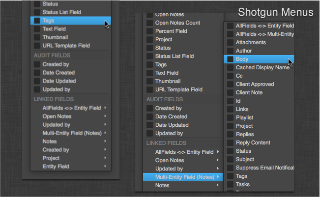

Shotgun Menus¶
Introduction¶
The Shotgun Menus class provide a standardized interface, look and feel for building menus that interact with Shotgun.
Shotgun Menu¶
Bases:
PySide.QtGui.QMenuA base class with support for easily adding labels and groups of actions with a consistent styling.
Usage Example:
shotgun_menus = sgtk.platform.import_framework("tk-framework-qtwidgets", "shotgun_menus") ShotgunMenu = shotgun_menus.ShotgunMenu # ... action1 = QtGui.QAction("Action 1", self) action2 = QtGui.QAction("Action 2", self) submenu = QtGui.QMenu("Submenu", self) menu = ShotgunMenu(self) menu.add_group([action1, action2, submenu], "My Actions")

Image shows the results of the
ShotgunMenucreated in the example.Initialize the menu.
Parameters: parent ( QWidget) – The menu’s parent.Adds a group of items to the menu.
The list of items can include
QActionorQMenuinstances. If atitleis supplied, a non-clickable label will be added with the supplied text at the top of the list of items in the menu. By default, a separator will be added above the group unlessFalseis supplied for the optionalseparatorargument. A separator will not be included if the group is added to an empty menu.A list of all actions, including separator, label, and menu actions, in the order added, will be returned.
Parameters: Returns: A list of added
QActionobjectsReturn type:
Add a label with the given title to the menu
Parameters: title (str) – The title of the sectional label